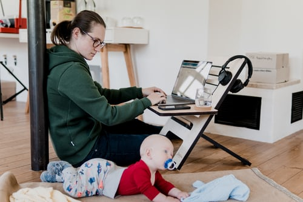

チッチはもうすぐ２歳
ここまで順調に育ってきた。
しかし、育児本やネット情報と比べると、「うちの子は少し言葉が遅いのかな」などと考えてしまうため、育成状況について、気が付いた時になんとなく記録することにした。
2021-3-2
歯磨きが嫌い
以前から歯磨きを嫌がるチッチ
最初の頃は「あ～の口」というと「あ～」と開けてくれてたのに。
今年に入って下顎の前歯の裏に歯石がたまっているのを発見。
１歳半検診では、
カルシウムを多くとっているから出来た（？）
そのうちポロっ取れるかも（？）
などと言われたみたいで、あまり心配はなさそう
とは言え、寝る前の歯ブラシが足りなかったのか、と反省しつつ、嫌がられてもしっかり歯ブラシをしようと決意
今のところ、鏡を見ながら「あ～の口」というと、大きな口を開けて歯磨きに応じてくれている。
2021-3-3
もうすぐ魔の２歳児がやってくる
チッチは１歳８ヵ月
最近甘えん坊になっている
泣きながら抱っこをせがんでくる
そして、思い通りにならないと
- 両目を閉じてすねた顔をする
- 大泣き（マネ？）して両足で地団駄を踏む
- 床に突っ伏してしばらく動かない
- 1~3のいずれかの連続技
をする。
２歳児は「魔の２歳児」と言われているようで、その前兆なのかな？
今のところはかわいいけどもう少し大きくなったらどうなるのか・・・。
2021-3-18
モンテッソーリ教育
巷では「モンテッソーリ教育」というものが流行っている。
アマゾンではその類の本が沢山売られていて、youtubeでもモンテッソーリ教育について解説する動画がいたるところでアップされている。
中には「ハーバード式」とか、いかにも秀才に育ちそうな言葉が添えられているものまである。
イメージで言うと、ノビノビ育てて才能の芽をつまないようにしようという類のものらしい（youtubeの動画情報）。
つまり、親が過度に子供に干渉することがあってはならず、子供の成長段階を適切に把握した上で接する、というイメージ。
と同時に、子供の行動は決して親を困らせようとしているわけではない、など、親の考え方に関する指南もあって、全体的に親の育児ストレスを軽減する啓発本のような役割も果たしていそうな感じ。
この手の本って、言うのは簡単なんだよ！って思いがっちだけど、アマゾン評価は軒並み好意的なもの。
一読の価値ありなのか、今度試しに読んでみよう。
2021-3-21
他の子との違い
最近、youtubeで子育て動画を見ている。
世間では、一般人が動画を編集してyoutubeに投稿することが割と浸透しているようで、有名人でなくとも再生回数が何十万件にもなっていることも多い。
子育て動画ってなんか見れちゃうよねーと言って、気が付くと１時間くらい見ていたりもする。
特に”イヤイヤ期”に関する動画はついつい再生したくなってしまう。
「家ついてっていいですか？」みたいに、みんな有名人でなくとも、他所の家庭をのぞき見したい願望ってあるんだな。
そうして色んな動画を見ていると、
- やっぱりチッチは言葉が遅れてるね
- 他の子は髪の毛結構生えてるな
- 他の家は結構おもちゃ買ってるぞ
- もう箸使ってるのか
- あんなインテリア置いて子供に倒されないのか
などなど、自分の家庭と比べて●●だ、ということが多く